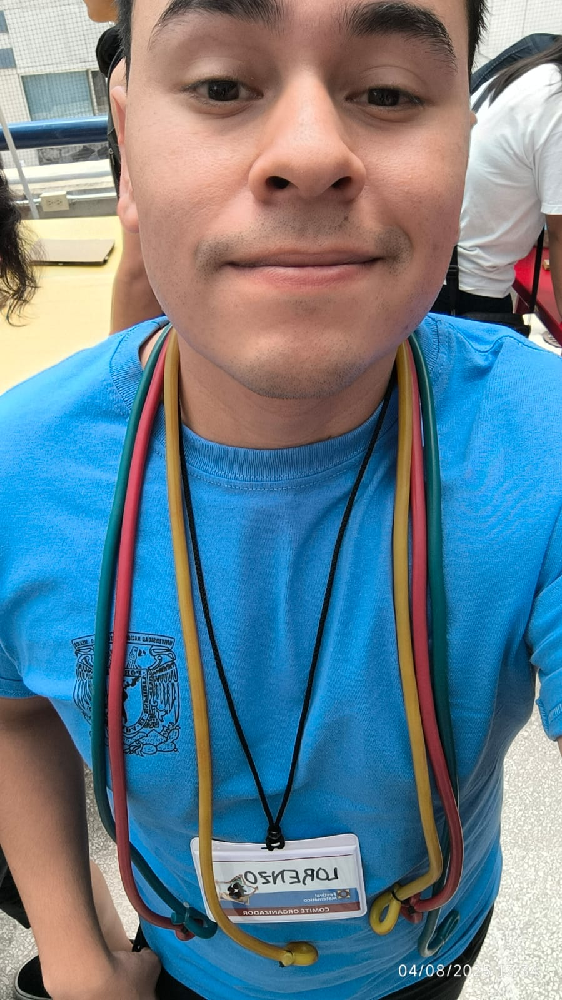

Mathematical outreach
I am an active member of Festival Matemático, an outreach project of the Institute of Mathematics at UNAM. We design interactive activities that present mathematics as a living, creative, and accessible discipline.
My participation includes activity design, volunteer training, public engagement, logistics, and audiovisual support.

Selected activities
About the project
The Festival is organized by academics, students, and community service participants. During the months before each event, we develop and test activities in a seminar and train volunteers to lead them.